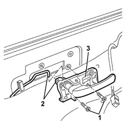

7005C52 INTERIOR OPENING HANDLE - R R
- Path
- Procedures > 70 FITTINGS > 7005 PASSENGER COMPARTMENT FRONT SIDE DOORS > 7005C FRONT LOCK CONTROLS > 7005C52 INTERIOR OPENING HANDLE - R R
- Kind
- repair procedure (removal / refitting; the operation number is the code)
- Applies to
- all engines; all production periods
- Interactive page
- https://sloeber94.github.io/elrnDB-aGt/en/#/125001775
Applies to: all engines; all production periods
 Removing
Removing
 Refitting
Refitting1. Undo the bolts.
2. Disconnect the rod from the retainer.
3. Recover the handle.

Applies to: all engines; all production periods
Refitting
RemovingCheck that the handle is undamaged.
Connect the linkage to the retainer.
Fit the handle.
Tighten the bolts.